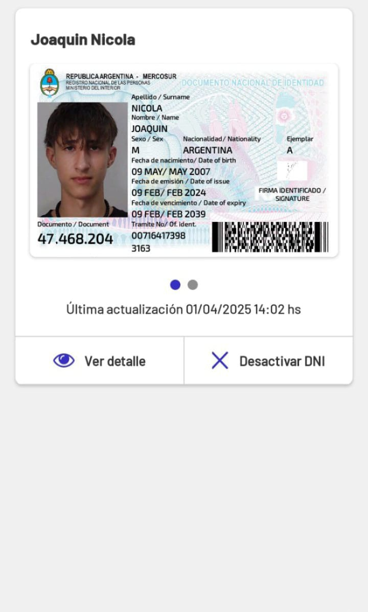

Bienvenido/a
Accedé a todos tus servicios digitales del Estado.

Descargá la app y registrate

Cómo validar mi identidad

Preguntas frecuentes

Servicios disponibles

Mesa de ayuda
Mis credenciales
Visualizá tus credenciales digitales como tu DNI, licencia de conducir y más.
Turnos
Consultá o sacá turnos para trámites oficiales.
Notificaciones
Revisá los avisos importantes y novedades del Estado.
Documento Nacional de Identidad (DNI)
Esta es tu credencial digital del DNI.
